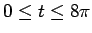

Next: About this document ...
Math428: Problem Set #4
- 1.
- Derive the optimal coefficients for 3rd order Adams-Bashforth.
- 2.
- [KC 8.4:4] Use the method of undetermined coefficients to derive
the fourth-order Adams-Bashforth formula
- 3.
- [KC 8.4:5]
Derive the fourth-order Adams-Moulton formula
- 4.
- Consider the ``poor man's orbital problem''
Solve the problem for

(four revolutions) with
 and
and  using forward Euler, backward Euler, 3rd order
Adams-Bashforth, 3rd order Adams-Bashforth-Moulton. Use an appropriate
Taylor series start-up procedure.
using forward Euler, backward Euler, 3rd order
Adams-Bashforth, 3rd order Adams-Bashforth-Moulton. Use an appropriate
Taylor series start-up procedure.
Louis F Rossi
2002-03-19